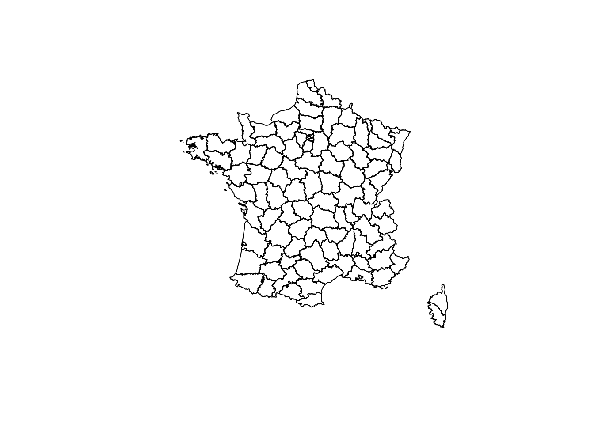
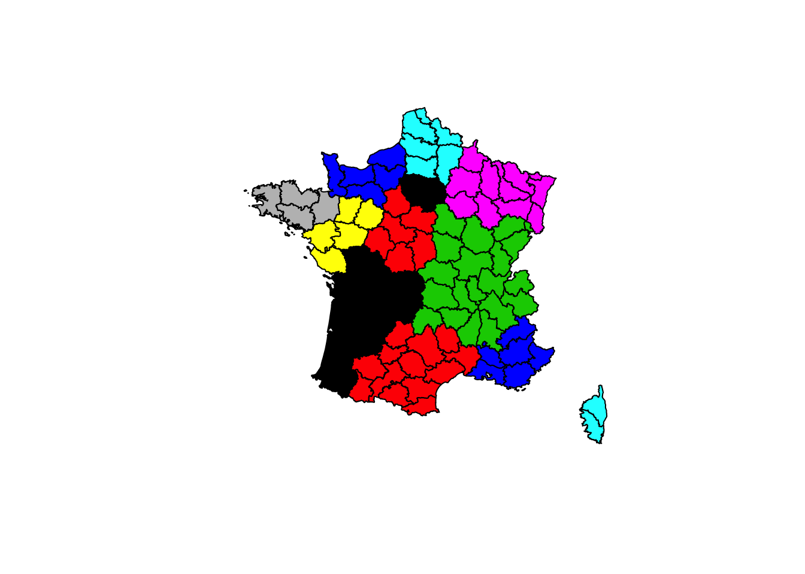
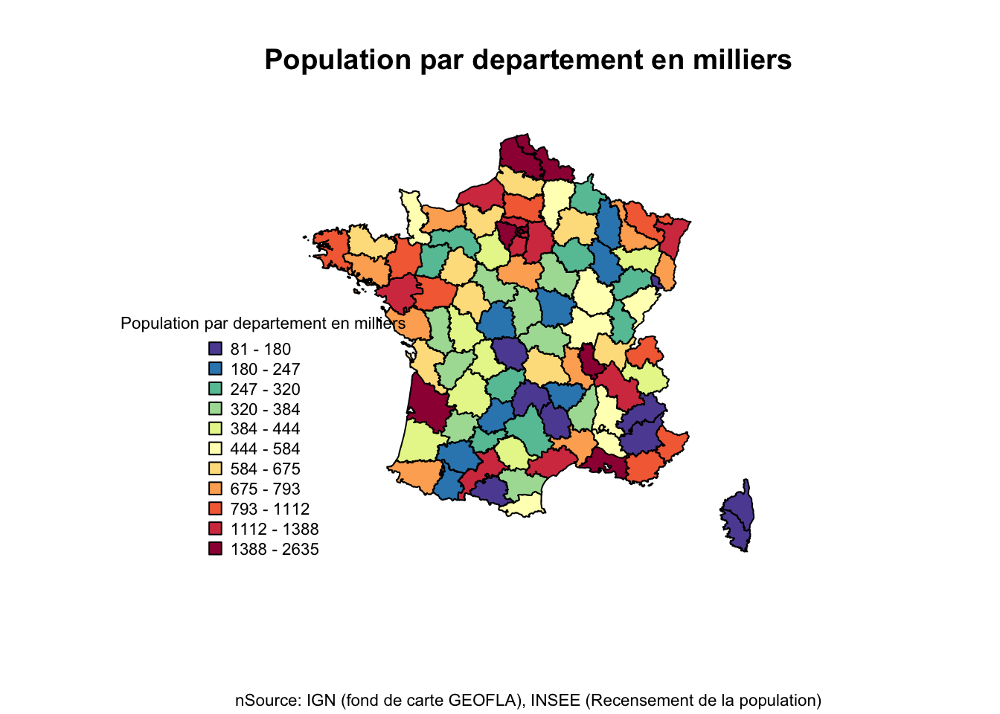
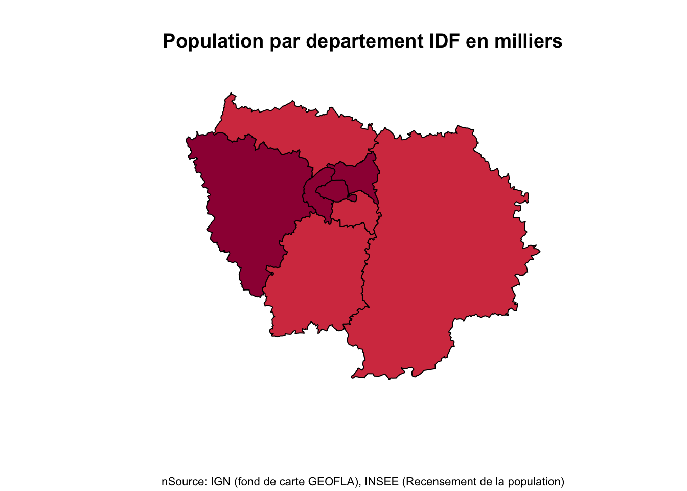
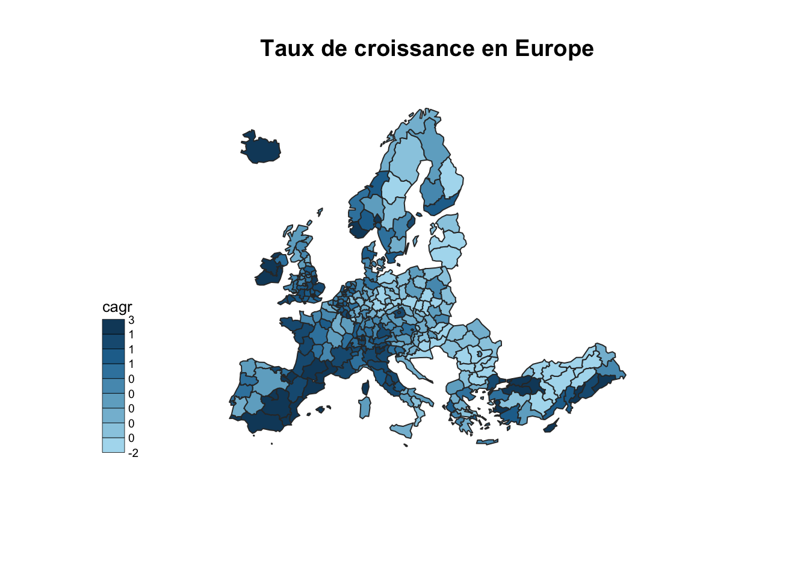
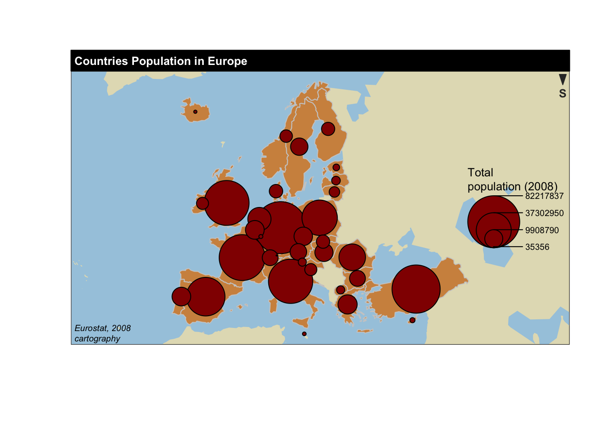

S?ance 3: Exemples de visualisation de cartes
1 Population par departement
library(RColorBrewer)
library(maptools)
library(classInt)
library('rgdal')
library('plotrix')
#Importation de fond de carte par departement
fdc_dep <- readShapeSpatial("data/DEPARTEMENT/DEPARTEMENT")
plot(fdc_dep)
summary(fdc_dep)## Object of class SpatialPolygonsDataFrame
## Coordinates:
## min max
## x 99217.1 1242417
## y 6049646.3 7110480
## Is projected: NA
## proj4string : [NA]
## Data attributes:
## ID_GEOFLA CODE_DEPT NOM_DEPT
## DEPARTEM0000000000000001: 1 01 : 1 AIN : 1
## DEPARTEM0000000000000002: 1 02 : 1 AISNE : 1
## DEPARTEM0000000000000003: 1 03 : 1 ALLIER : 1
## DEPARTEM0000000000000004: 1 04 : 1 ALPES-DE-HAUTE-PROVENCE: 1
## DEPARTEM0000000000000005: 1 05 : 1 ALPES-MARITIMES : 1
## DEPARTEM0000000000000006: 1 06 : 1 ARDECHE : 1
## (Other) :90 (Other):90 (Other) :90
## CODE_CHF NOM_CHF X_CHF_LIEU Y_CHF_LIEU
## 001 : 2 AGEN : 1 Min. : 171326 Min. :6108968
## 004 : 2 AJACCIO: 1 1st Qu.: 553176 1st Qu.:6401238
## 007 : 2 ALBI : 1 Median : 658409 Median :6631771
## 010 : 2 ALENCON: 1 Mean : 684049 Mean :6609885
## 033 : 2 AMIENS : 1 3rd Qu.: 846156 3rd Qu.:6820420
## 085 : 2 ANGERS : 1 Max. :1228512 Max. :7059443
## (Other):84 (Other):90
## X_CENTROID Y_CENTROID CODE_REG
## Min. : 115669 Min. :6050394 76 :13
## 1st Qu.: 544294 1st Qu.:6398674 75 :12
## Median : 659892 Median :6639324 84 :12
## Mean : 681127 Mean :6611276 44 :10
## 3rd Qu.: 838334 3rd Qu.:6834668 11 : 8
## Max. :1225168 Max. :7046488 27 : 8
## (Other):33
## NOM_REG
## LANGUEDOC-ROUSSILLON-MIDI-PYRENEES :13
## AQUITAINE-LIMOUSIN-POITOU-CHARENTES:12
## AUVERGNE-RHONE-ALPES :12
## ALSACE-CHAMPAGNE-ARDENNE-LORRAINE :10
## BOURGOGNE-FRANCHE-COMTE : 8
## ILE-DE-FRANCE : 8
## (Other) :33str(fdc_dep@data)## 'data.frame': 96 obs. of 11 variables:
## $ ID_GEOFLA : Factor w/ 96 levels "DEPARTEM0000000000000001",..: 1 2 3 4 5 6 7 8 9 10 ...
## $ CODE_DEPT : Factor w/ 96 levels "01","02","03",..: 40 43 77 90 69 27 10 56 62 68 ...
## $ NOM_DEPT : Factor w/ 96 levels "AIN","AISNE",..: 51 54 82 95 35 30 9 65 71 12 ...
## $ CODE_CHF : Factor w/ 86 levels "001","004","007",..: 69 56 83 11 25 28 74 13 1 80 ...
## $ NOM_CHF : Factor w/ 96 levels "AGEN","AJACCIO",..: 53 84 82 12 34 30 91 14 4 86 ...
## $ X_CHF_LIEU: int 895198 808646 562355 742447 1024125 588211 779954 859261 484935 1050377 ...
## $ Y_CHF_LIEU: int 6622537 6482549 6928721 6744261 6784581 6817344 6800379 6854586 6818334 6840891 ...
## $ X_CENTROID: int 886172 795655 550942 748211 1016174 579506 787771 873653 502675 1035762 ...
## $ Y_CENTROID: int 6641548 6521581 6952842 6750855 6763894 6810114 6802945 6885669 6833540 6839265 ...
## $ CODE_REG : Factor w/ 13 levels "11","24","27",..: 3 11 4 3 6 2 6 6 4 6 ...
## $ NOM_REG : Factor w/ 13 levels "ALSACE-CHAMPAGNE-ARDENNE-LORRAINE",..: 4 3 11 4 1 6 1 1 11 1 ...
## - attr(*, "data_types")= chr "C" "C" "C" "C" ...plot(fdc_dep,col=as.numeric(fdc_dep$CODE_REG))
library(readr)
# guess_encoding("data/departements.csv", n_max = 1000)
pop_dep <- read.csv("data/departements.csv", header = TRUE, sep= ";", dec="," ,skip = 7, fill= TRUE,encoding = "UTF-8",fileEncoding = "windows-1252")head(pop_dep)## Code.région Nom.de.la.région Code.département
## 1 82 Rhône-Alpes 01
## 2 22 Picardie 02
## 3 83 Auvergne 03
## 4 93 Provence-Alpes-Côte d'Azur 04
## 5 93 Provence-Alpes-Côte d'Azur 05
## 6 93 Provence-Alpes-Côte d'Azur 06
## Nom.du.département Nombre.d.arrondissements Nombre.de.cantons
## 1 Ain 4 23
## 2 Aisne 5 21
## 3 Allier 3 19
## 4 Alpes-de-Haute-Provence 4 15
## 5 Hautes-Alpes 2 15
## 6 Alpes-Maritimes 2 27
## Nombre.de.communes Population.municipale Population.totale X
## 1 419 619 497 636 916 NA
## 2 816 540 067 554 512 NA
## 3 320 343 431 353 742 NA
## 4 200 161 916 166 726 NA
## 5 172 139 279 144 640 NA
## 6 163 1 080 771 1 096 741 NAclass(pop_dep$Population.totale) # les espaces n'etant pas reconnus comme separateur de milier par R on doit les enlever## [1] "factor"pop_dep$pop <- as.numeric(gsub(" ","",pop_dep$Population.totale,fixed=TRUE))
class(pop_dep$pop) ## [1] "numeric"distr <- classIntervals(pop_dep$pop,11,style="quantile")$brks
display.brewer.all() 
couleurs <- brewer.pal(11,"Spectral")
couleurs <- couleurs[11:1]
mtch <- match(fdc_dep$CODE_DEPT,pop_dep$Code.département) colMap1 <- couleurs[(findInterval(pop_dep$pop,distr,all.inside=TRUE))]
col_match<-colMap1[mtch]maLeg <- function (vec, arrond, mil) {
x <- vec
lx <- length(x)
if (lx < 10)
stop("pas suffisamment de classes")
res <- character(lx - 1)
res
for (i in 1:(lx - 1))
{res[i] <- paste(round(x[i]/mil,arrond), round(x[i + 1]/mil,arrond),sep=" - ")
}
res
}plot(fdc_dep,col=col_match,main ="Population par departement en milliers", sub="nSource: IGN (fond de carte GEOFLA), INSEE (Recensement de la population)",cex.sub=0.7)
legend("bottomleft", maLeg(distr,0,1000),pch=22,
pt.bg=couleurs, bty="n",
title="Population par departement en milliers",
title.adj=0.5, xpd=TRUE,y.intersp=1,xjust=0,adj=0,
pt.cex=1.3,cex=0.7)
fdc_dep_idf<-fdc_dep[fdc_dep$CODE_REG=="11",] # creation de la carte IDF en selectionnant que les donn??es de la condition CODE_REG=="11" pour l'il de france
mtch2 <- match(fdc_dep_idf$CODE_DEPT,pop_dep$Code.département)
# On doit rematcher la nouvelle carte par code de departement pour avoir les bonnes coueleurs
colMap2 <- couleurs[(findInterval(pop_dep$pop,distr,all.inside=TRUE))]
col_match2<-colMap2[mtch2]plot(fdc_dep_idf,col=col_match2,main ="Population par departement IDF en milliers", sub="nSource: IGN (fond de carte GEOFLA), INSEE (Recensement de la population)",cex.sub=0.7)
2 Carte Europe
library("sp")
library("rgeos")
library("cartography")
# Import de donn?es dans la session
data(nuts2006)
# Calcul du taux de croissance annuel moyen
nuts2.df$cagr <- 100 * (((nuts2.df$pop2008/nuts2.df$pop1999)^(1/9)) - 1)
# Cartographie
choroLayer(spdf = nuts2.spdf, df = nuts2.df, var = "cagr")
title("Taux de croissance en Europe")
# Construire une palette de couleurs
cols <- carto.pal(pal1 = "green.pal", n1 = 2, pal2 = "red.pal",
n2 = 4)
# Affichage de couches d'habillage
plot(nuts0.spdf, border = NA, col = NA, bg = "#A6CAE0")
plot(world.spdf, col = "#E3DEBF", border = NA, add = TRUE)
# Cartographie du taux de croissance annuel moyen
choroLayer(spdf = nuts2.spdf, df = nuts2.df, var = "cagr",
breaks = c(-2.43, -1, 0, 0.5, 1, 2, 3.1), col = cols,
border = "grey40", lwd = 0.5, legend.pos = "right",
legend.title.txt = "taux de croissance\nannuel moyen",
legend.values.rnd = 2, add = TRUE)
# Affichage de couches d'habillage
plot(nuts0.spdf, border = "grey20", lwd = 0.75, add = TRUE)
# Ajout des titres, l?gende, sources, etc.
layoutLayer(title = "Taux de croissance en Europe",
author = "cartography", sources = "Eurostat, 2008",
frame = TRUE, col = NA, scale = NULL, coltitle = "black",
south = TRUE)
#Cartographie d'un stock (la population nationale) avec des figur?s proportionnels.
# Affichage de couches d'habillage
plot(nuts0.spdf, border = NA, col = NA, bg = "#A6CAE0")
plot(world.spdf, col = "#E3DEBF", border = NA, add = TRUE)
plot(nuts0.spdf, col = "#D1914D", border = "grey80",
add = TRUE)
# Cartographie de la population des pays en cercles
# proportionnels
propSymbolsLayer(spdf = nuts0.spdf, df = nuts0.df,
var = "pop2008", symbols = "circle", col = "#920000",
legend.pos = "right", legend.title.txt = "Total\npopulation (2008)",
legend.style = "c")
# Ajout des titres, l?gende, sources, etc.
layoutLayer(title = "Countries Population in Europe",
author = "cartography", sources = "Eurostat, 2008",
scale = NULL, south = TRUE)
Copyright © 2016 Kezhan SHI